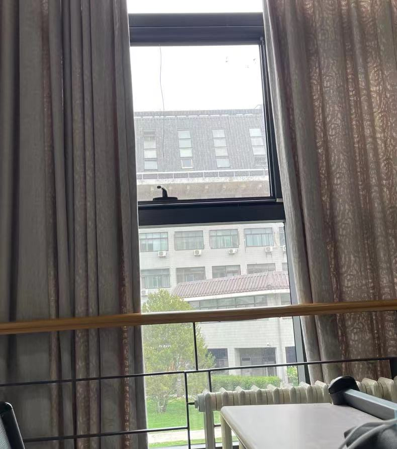
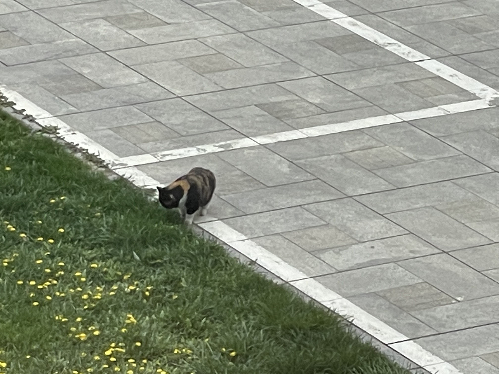

开篇
写在一切的最开始吧
下午两点整，窗外仿佛打了高鲜明、低对比、低色温的滤镜，有那种文艺青年会发在ins上的白色系风格。昨天做了语言测试的一场被试，今天要和朋友讨论一些东西，明天有一场考试和一个pre要做，考前对于一切非学习相关的东西都是兴趣盎然的。想着个人网站的开发不能止步于框架，所以今天也趁着这段时间，写一些虚无缥缈、不是很具有逻辑性的东西，一方面能够让不知怎的了解这个网站的你能够对我有点了解，另一方面也算是督促自己，希望能够在开始之后也有一段时间的高强度更新。
首先讲一下为什么要搞这个网站吧。源自于在微信看到朋友搭建的个人blog，小小的触动了那种小学或者初中时想着“啊怎么着我也得写几篇日记记录下我的生活”的想法，但是从未能坚持写过。还记得小时候的暑假，在最后一天写了20篇日记，结果因为每一篇都篇幅太短，而且没写完暑假作业被叫了家长到学校把我领回家。所幸现在互联网发展也很厉害，让我这种不是专业对口的人也能够比较轻松的搞一些还能够看得过去的网页吧，虽然有相当一部分是从网络上搞来的开源模板，但争取在之后的试着去增加一些新的模块，比如留言板和一些比较有意思的交互。
其次就是网页左上方的三大版块，都是目前打算做的一些记录。同上文提到的，三者是我在书本阅读、建模和游戏开发等方向进行探索与尝试的过程记录，同样的另外一种对于设计和网站开发的内容则内化到每一次新发布的页面之中，不求那些专业人士的正面评价，单就获得一些个人层度的满足感
浅浅地总结一下，这个网站是我在百无聊赖之时突发奇想对于计算机热点的追随，对于自己三分钟热度的抵制以及对于美好生活的记录热情。放一张猫猫在这里，希望在日后能够记起，愿意在这拍一张猫猫图的我是怎样的一种心境吧。